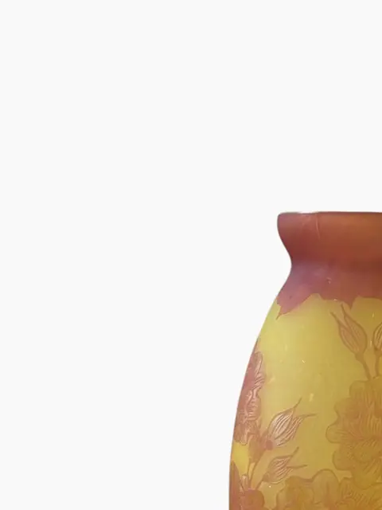
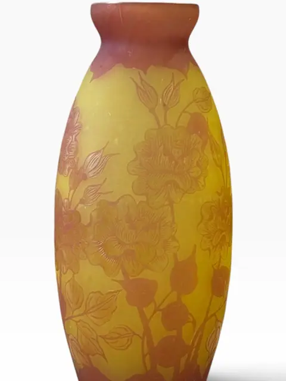
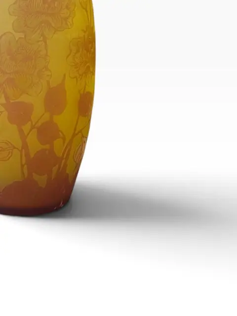

Handmade Objects
Art Nouveau Cameo Glass Vase with Floral Decoration, in the Manner of Émile Gallé
· 20th century
Price Upon Request




About the Item
An Art Nouveau cameo glass vase in the manner of Émile Gallé, the yellow ground overlaid and acid-etched in reddish-purple with roses, buds and foliage. The ovoid body rises to a gently pinched neck. No signature observed — offered as a Gallé-style piece rather than an attributed work. Dimensions: Not available — no measurement photos in set No signature visible in cover or detail crops. Acid-etched cameo technique, yellow ground with aubergine-red overlay carved back to reveal floral design. Art Nouveau taste, early 20th century. Without a Gallé signature, attribution stays 'in the manner of'.
Details
- Creation Year:
- 20th century
- Medium:
- Cameo glass
- Period:
- 20Th
- Condition:
- Offered in the condition shown in the photographs.
- Reference Number:
- VO-374